Researchers doing particle size analysis on TEM micrographs traditionally trace and measure particles by hand in tools like ImageJ, one particle at a time, which can take tens of minutes for a field with a few hundred particles. I built TemSeg so a researcher can upload a micrograph and get a full instance segmentation with per particle morphology in seconds, then refine, validate, and export everything from the same session.
§Architecture
Click a folder to see what is actually in it.
-
The FastAPI service and the PyTorch models underneath it.
-
-
The FastAPI server and every endpoint it exposes.
- main.pyThe server entry point.
-
Every request the frontend makes lands in one of these files.
- images.pyUpload, preview, and metadata extraction.
- segment.pyRuns detection and segmentation.
- masks.pyMask upload, refinement, and download.
- rf.pyTrain and propose endpoints for RF Recovery.
- ground_truths.pyScores a segmentation against an uploaded ground truth mask.
- export.pyBundles a session's outputs into a zip.
-
One interface, three interchangeable implementations.
- base_model.pyThe interface every segmentation model has to implement.
-
- yolosam.pyYOLOv8 detection plus SAM segmentation. The default pipeline.
- maskrcnn.pyA single stage instance segmentation baseline.
- rf_recovery.pyA random forest pixel classifier that recovers particles the primary model missed.
-
-
One folder per session. This is the whole database.
- instances.jsonParticle contours and bounding boxes. The stats panel, the per particle table, the highlighting, and the export all read from this file instead of recomputing anything.
- instances.npyThe labeled mask array behind instances.json. Loaded alongside it, never regenerated.
-
-
A static Next.js export. No server side rendering, no Node at runtime.
-
- page.tsxThe canvas page. Entry point for the whole workspace.
-
Canvas renderers. No business logic lives here.
- AnnotateCanvas.tsxObject proposals and polygon drawing.
- RefineCanvas.tsxManual mask editing.
-
State lives here, not in the components.
- useSegmentationState.tsSegmentation, masks, and ground truth state.
- useRefineState.tsEditing state.
- lib/api.tsEvery request to the backend goes through this one file.
-
§Walkthrough
What follows is the real workflow, captured by driving the actual app, backend and frontend unmodified, through its own HTTP API rather than through mockups.
1. Ingest and calibrate
Upload accepts TIF, TIFF, JPEG, PNG, EMD, which is the vendor specific TEM container format, and NPY. When an image is uploaded, the backend parses whatever acquisition metadata is embedded in the file and attempts automatic scale bar detection, so downstream measurements like Feret diameter and area come out in calibrated units instead of raw pixels. When that recovery fails, as it does here because this crop has a scale bar burned directly into the pixels rather than embedded as metadata, the app reports pixel size as Not Found instead of guessing, and lets the value be entered manually.
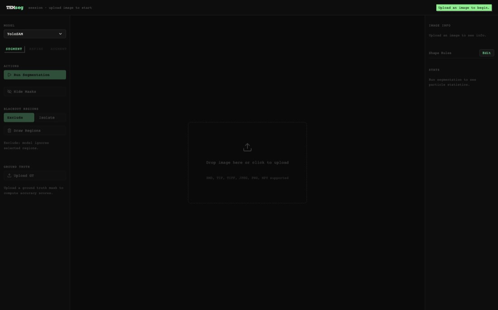
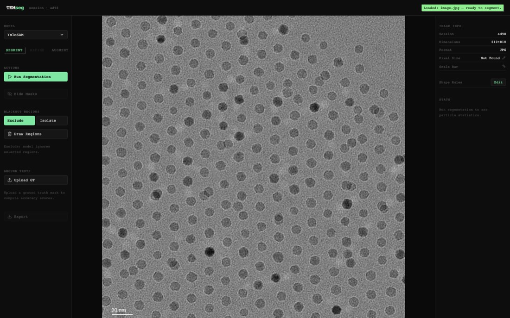
2. Choose a model
YoloSAM, MaskRCNN, or MaskRCNN Synthetic can be selected for any run.
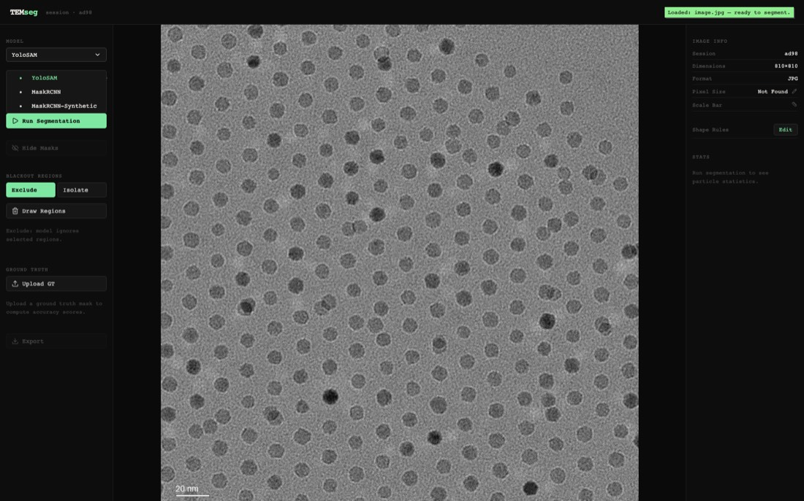
3. Segment automatically
A single action produces a full instance segmentation. Every particle is outlined and colorized individually, and the stats populate immediately. On this micrograph, YoloSAM returned 270 particles in 6.56 seconds, with a mean diameter of 25.53 pixels, a mean circularity of 0.929, and a mean aspect ratio of 1.15. This is the core value of the tool: work that used to take tens of minutes of manual tracing is fully segmented and quantified in a few seconds.
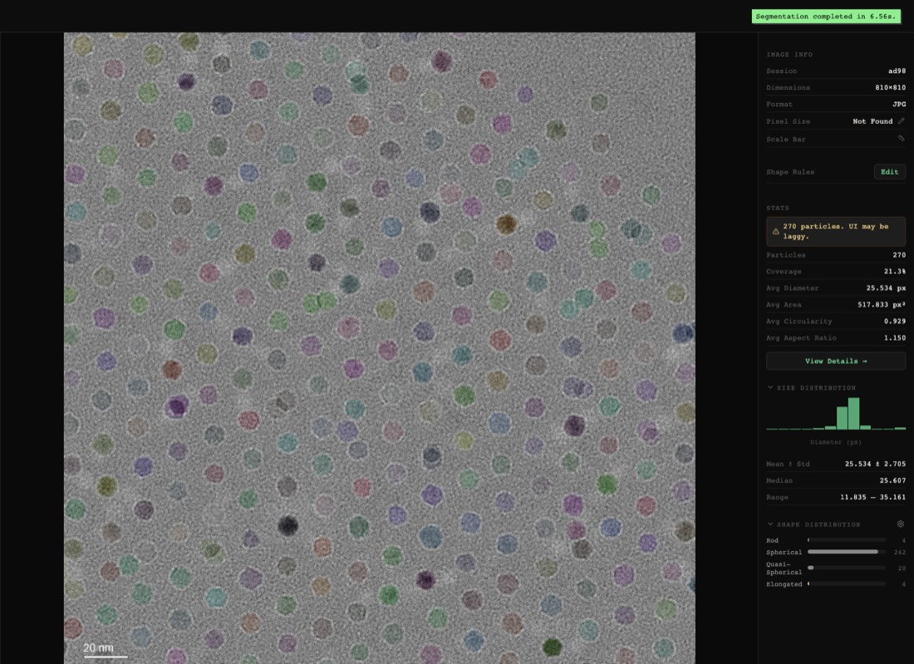
4. Control the field
Rectangular blackout regions constrain what the model can see, and they work in either direction. Exclude mode masks a region out, which is useful for scale bars, labels, or damaged film. Isolate mode does the opposite, restricting the next run to only the drawn region. Changing a region immediately flags the current result as stale, so it is never possible to mistake an unrefreshed segmentation for one that reflects the current selection.
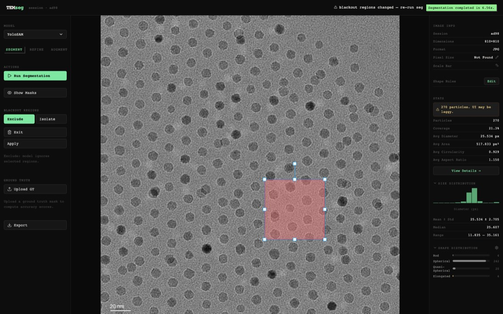
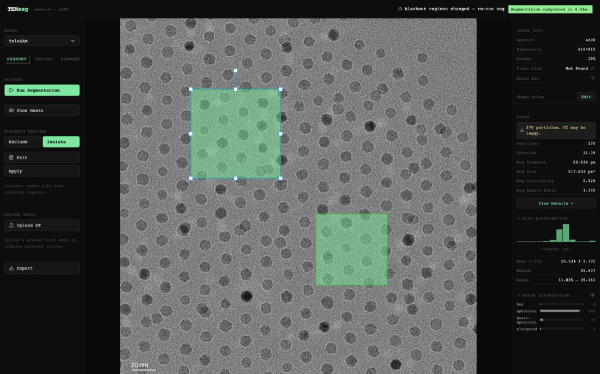
5. Prompt for a specific miss
Beyond full field detection, a click is treated as a point prompt to SAM and goes through the same propose then accept flow, which lets a researcher pull in a single missed particle without running detection over the whole image again. The example below is included because it failed cleanly. A click on a texture or noise patch was rejected by the backend with a 400 response, reading no box variant within area window, instead of silently returning a low quality mask. That rejection is a guardrail rather than a bug. The heuristic requires a plausible particle sized structure around the click and refuses to invent one where none exists.
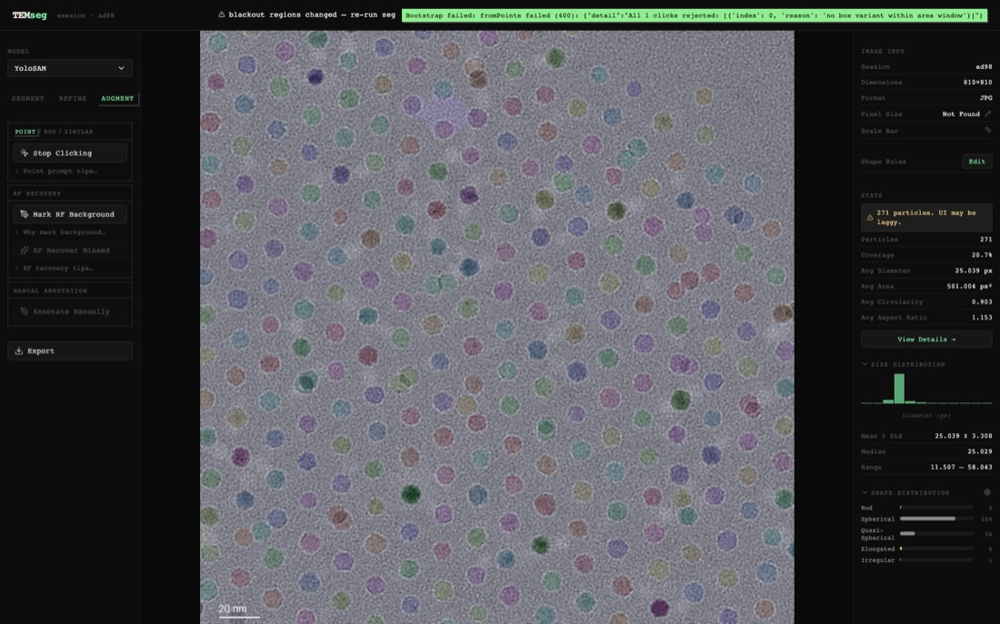
6. Validate against ground truth
When a paired annotation mask is available, IoU and Dice are computed live and overlaid on the same canvas as the segmentation, so any discrepancy can be inspected visually rather than read only as a single summary number.
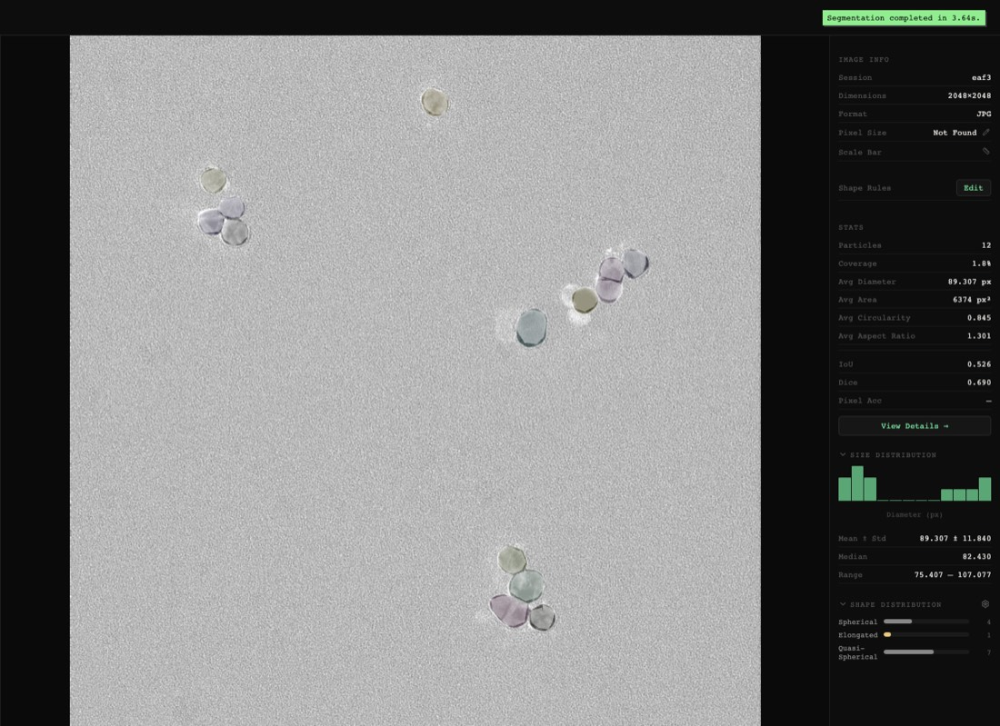
7. Analyze
A dedicated dashboard aggregates the full session. It shows a size distribution histogram with an automatically selected best fit, comparing lognormal, Normal, and Weibull fits with a KS test, a shape scatter plot of circularity against aspect ratio, and a sortable table with every computed metric for each particle. Every number here comes from the same saved instance set used for export, so nothing is recomputed differently between the live canvas and this view.
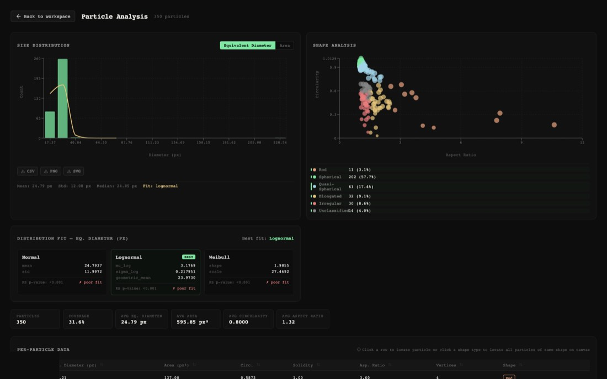
8. Own your taxonomy
The mapping from computed metrics to a shape label is not hard coded. It is an ordered list of rules that the user can edit, evaluated from top to bottom, and the first rule that matches wins. Anything that matches no rule falls through to unclassified instead of being forced into the wrong bucket. Rod and spherical are not universal definitions. What counts as either depends on the particle chemistry and on what the researcher considers meaningful, so the classification is a configuration the user owns rather than an assumption built into the tool.
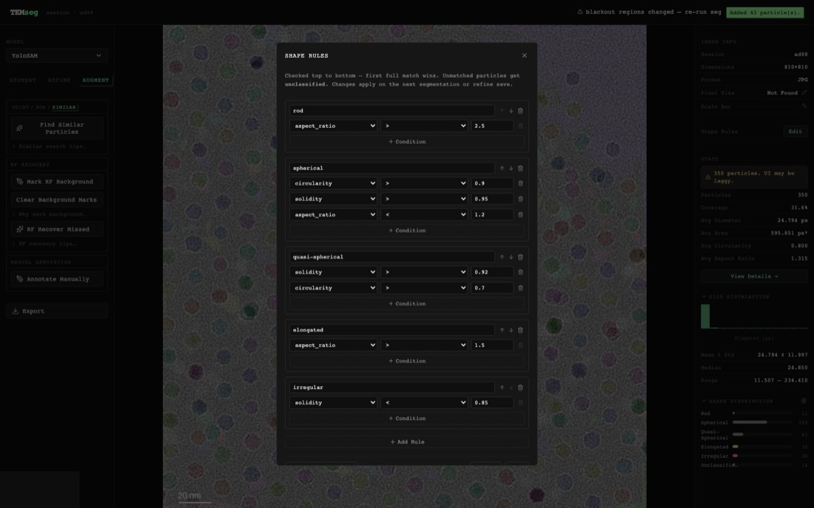
9. Export
Every artifact for a session can be bundled into a single zip file, and each one can be selected independently: the original image, the segmentation mask as a PNG and as a raw NPY array, refined mask equivalents of both, the per instance contours as JSON, summary statistics as a CSV, and full COCO format annotations. Export is a serialization step over the same saved instance set rather than a separate computation, so the exported numbers always match whatever the session currently shows.
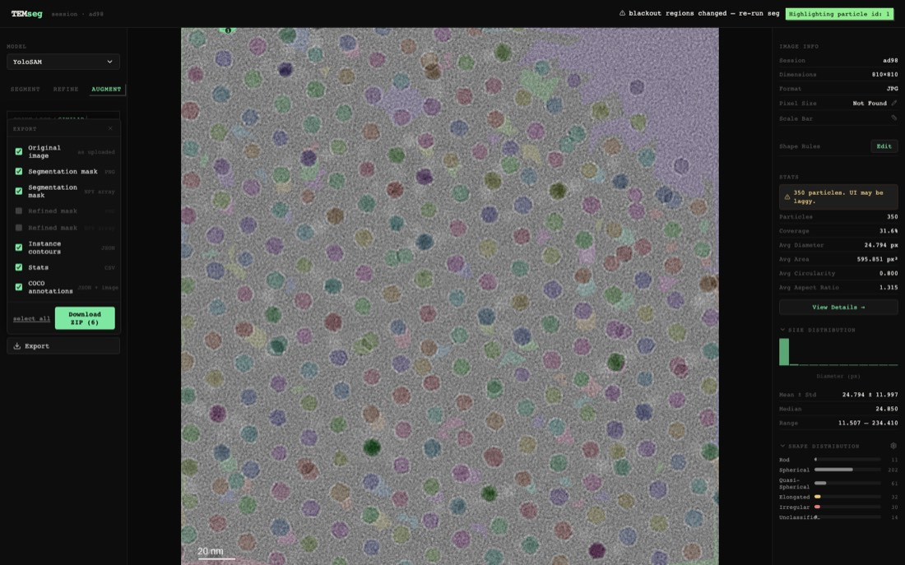
§Decisions I would point to
- Filesystem sessions instead of a database A single mutable pair of files per session is easier to reason about, back up, and export than a schema, and this is a tool for a single researcher rather than a multi tenant service.
- Stale state invalidation as a UX primitive Any edit that changes what a segmentation run would see, such as a blackout region or a model switch, immediately flags the current result as stale, instead of trusting the researcher to remember to run it again.
- Model abstraction over model choice YoloSAM, MaskRCNN, and MaskRCNN Synthetic all speak the same interface, so adding or swapping a model does not touch the segment, refine, or export pipeline at all.
- A classical ML recovery path alongside the deep detectors RF Recovery trains a per session random forest from a handful of background scribbles drawn by the user, to catch particles the primary model missed. It is the same idea that LABKIT popularized for bioimage analysis, applied narrowly here as a recovery pass rather than as the primary method.